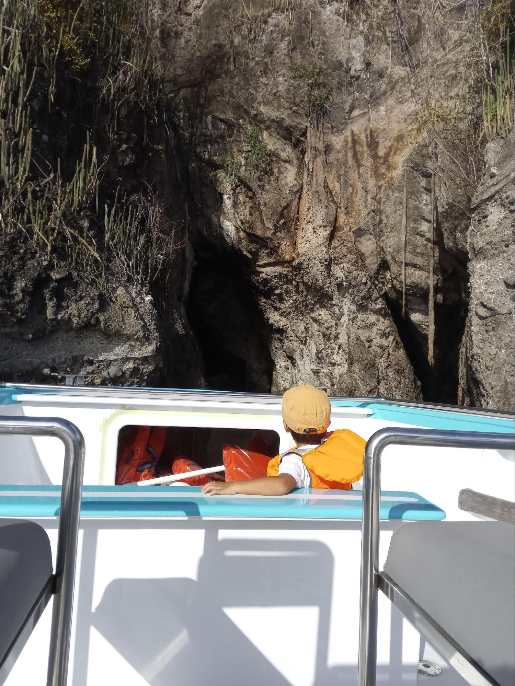
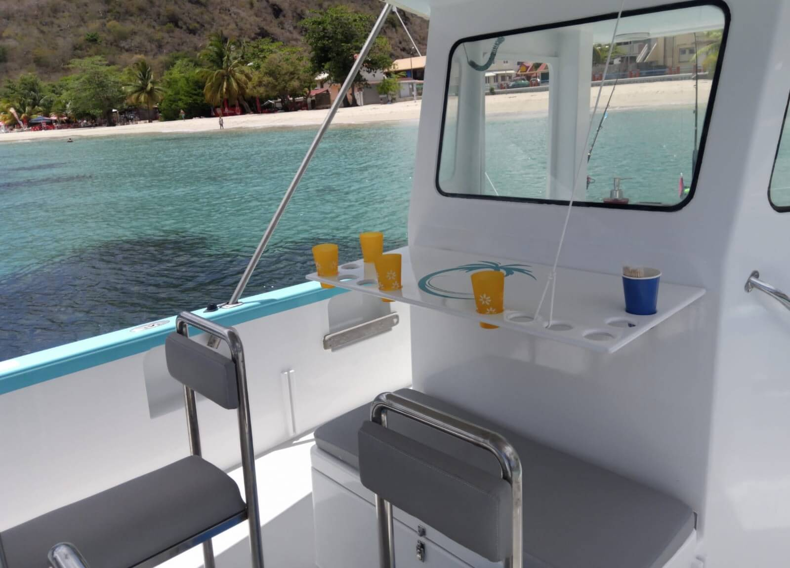
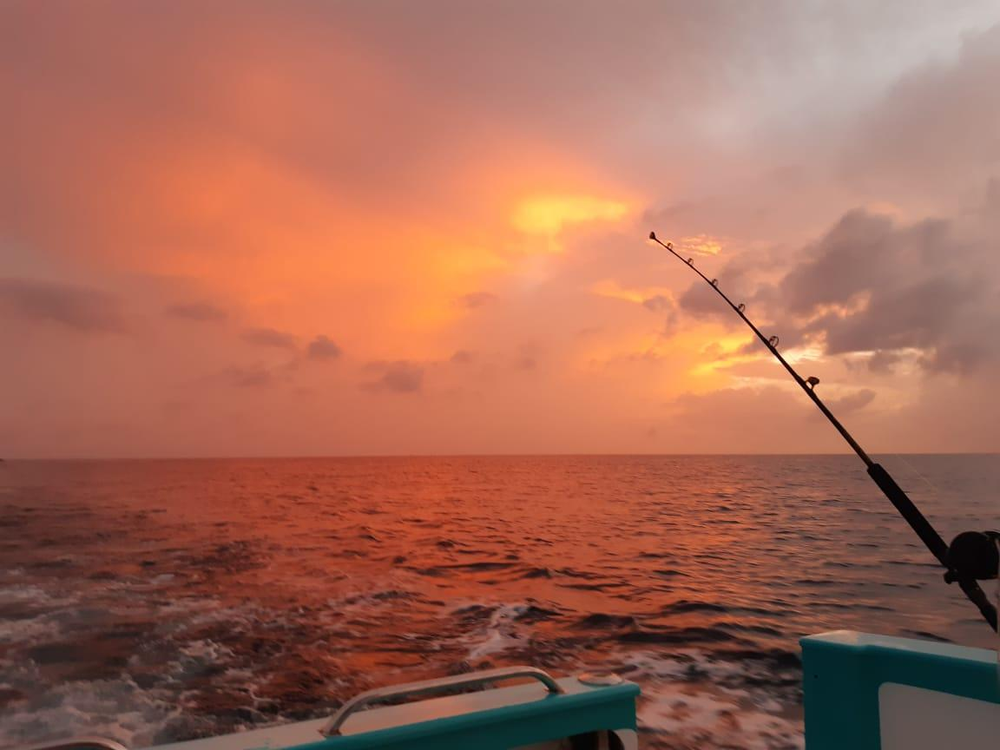
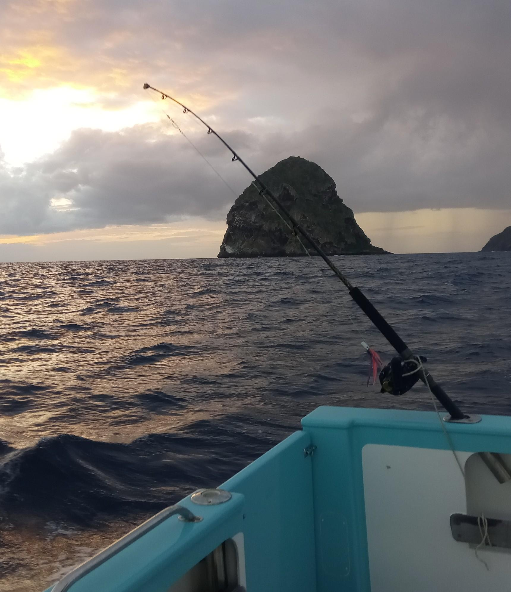
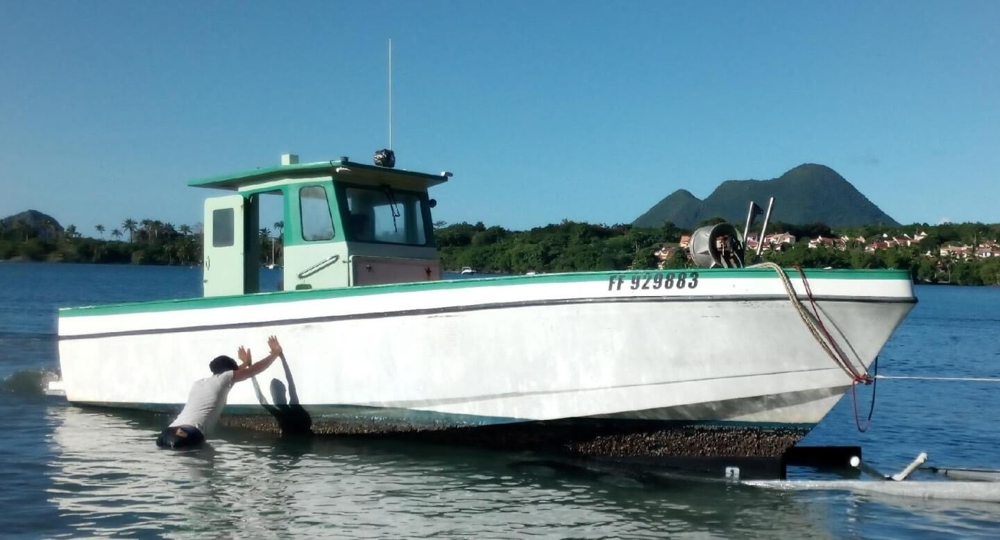
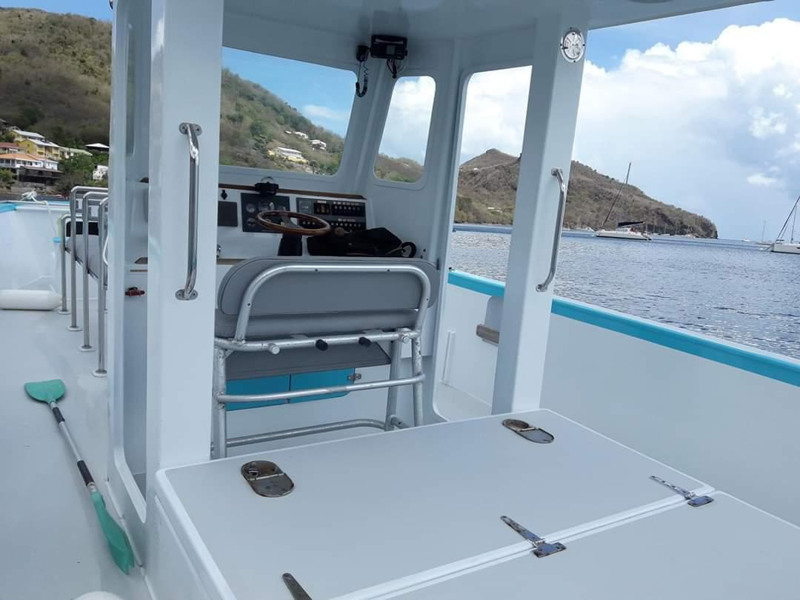
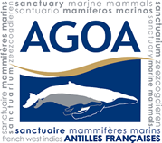
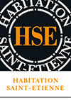

L'émotion en caraïbes
La Martinique est un carrefour de cultures.
Taravana Tautaï est avant tout l'histoire d'une rencontre avec notre île.
Plusieurs programmes s’offrent à vous !
En journée complète ou demi-journée, vous pourrez partir à la découverte des dauphins, baleines et autres
mammifères marins au sein du sanctuaire AGOA. Vous aurez peut-être la visite des tortues le temps d’une
baignade à l’Anse noire, le tout, bien sûr, en dégustant l’un des meilleurs rhum de la Martinique accompagné
de bons produits locaux. Selon vos envies, vous pourrez également choisir de finir cette sortie par un apéritif
en profitant des derniers rayon du soleil.
Sorties dauphins
Journée
Sortie observation des mamiphères marins avec repas et temps de détente compris.
Demi-journée
Embarquez pour une demi journée d’observation des mammifères marins au sein du sanctuaire Agoa avec un équipage qualifié et respectueux des animaux.
Sunset
Profitez d’une après-midi en compagnie des mammifères marins présents dans le sanctuaire et finissez la journée en beauté en dégustant à bord un apéritif de qualité avec vue innoubliable sur le couché de soleil.
Autres sorties
Pêche sportive
Accompagné d'un équipage professionnel, nous vous proposons des formules demi-journée avec ou sans materiel pour une capacité de 6 personnes maximum.
Privatisation
Nous vous proposons la privatisation complète du bateau à la journée ou demi-journée pour une capacité de 12 personnes maximum. Vous aurez la possibilité de faire votre programme à la carte, tant au niveau des destinations ou escales que des repas proposés. N'hésitez pas à nous contacter pour discuter de vos envies ou désirs.
Le bateau
L'histoire
Aménagement
L'équipage
Tout a commencé pour Jérôme, le capitaine, par le milieu de la plongée en tant que Brevet d'etat de plongée en 1998 aux Glénans.
Après une arrivée en caraïbes en 2001, il as continué sa passion de la plongée.
Puis il s'est orienté vers la marine marchande avec l'obtention de son diplôme de capitaine en 2007.
Après plusieurs années de capitaine de bateau à voile dans tout l'arc antillais et plusieurs transatlantique, Jérôme a décidé de déposer définitivement ses valises en martinique.
Et ainsi partager sa passion du milieu sous-marin et de la navigation avec vous.
Ainsi est née le concept de Taravana Tautaï, le partage de la culture caribéennes et du patrimoine marin.
Photos
Contacts
Partenaires
 